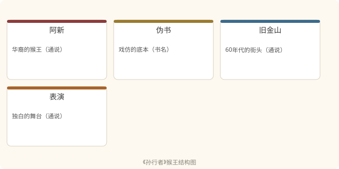

孙行者：他的伪书
一、基本信息
| 作者 | 汤亭亭 |
|---|---|
| 成书/出版 | 1989年（作者页注记：Britannica 列举） Maxine Hong Kingston — Encyclopaedia Britannica（百科全书） |
| 国别/地区 | 美国 |
| 时代 | 现当代 · 20世纪80年代末 |
| 体裁 | 长篇小说 |
| 语言 | 英语 |

《孙行者》猴王结构图（主题·结构图）
二、创作背景
作者页注记：孙行者：他的伪书——'（Britannica 列举）'。
Britannica：汤婷婷——华裔美国作家（《女勇士》《中国佬》作者——交叉）。
题材（通说待核）：惠特曼·阿新——1960年代旧金山的华裔'猴王'剧作家。
三、内容脉络
（通说待核）阿新的独角戏：'猴王'的街头表演。
（通说待核）'伪书'：惠特曼的《草叶集》底本（通说待核）。
四、主要人物表
| 人物 | 身份 | 说明 |
|---|---|---|
| 惠特曼·阿新 | 华裔青年 | （通说待核） |
五、主题与艺术特点
- '猴王'的美国化（通说待核）。
- '伪书'（fake book）的双关（书名语境）。
- 60年代反文化（通说待核）。
六、影响与评论
- Britannica：Tripmaster Monkey（作者页注记）。
Maxine Hong Kingston — Encyclopaedia Britannica（百科全书） - Britannica：《女勇士》为成名作（作者页交叉）。
Maxine Hong Kingston — Encyclopaedia Britannica（百科全书）
七、阅读建议
难点
- '惠特曼·阿新'名字的戏谑。
- 60年代旧金山。
- 《孙行者：他的伪书》中译本（人民文学等——通说待核）。
- 英文原版。
汤婷亭三部曲之三；与《中国佬》对读。
八、待核实
- 阿新人名核对（通说）。
- 1989年出版（Knopf说）待核。
- '独角戏'结构待核。